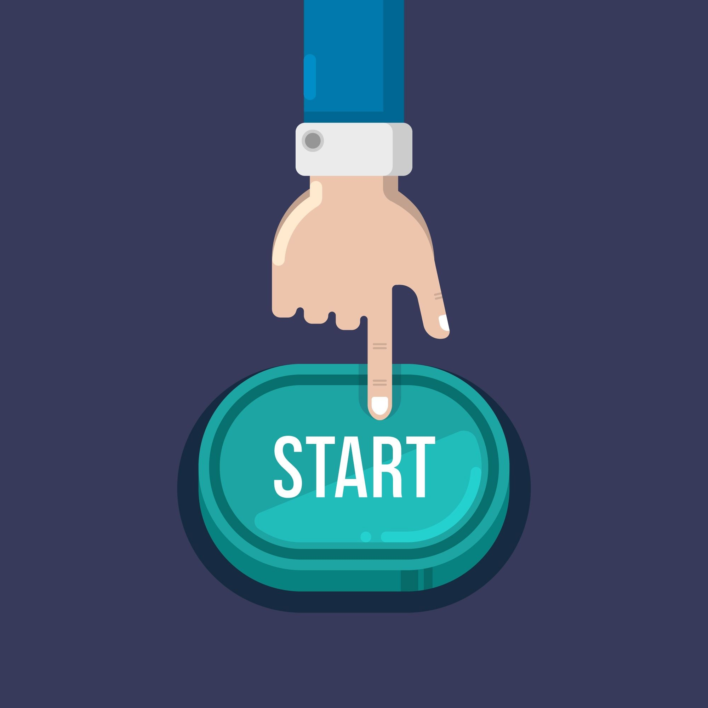

Pon en práctica lo aprendido
A continuación, encontrarás algunas situaciones que pueden ocurrir en un aula virtual.
En cada caso, tendrás que decidir cómo actuar. No se trata solo de saber qué hacer, sino de aplicar las estrategias que has aprendido para participar de forma activa y organizada.

¿Qué harías en esta situación?
¿Qué harías en esta situación?
Lee cada caso y elige la actuación más adecuada. Recibirás feedback inmediato, podrás reintentar cada caso y verás tu progreso al completar la actividad.
Progreso Caso 1 de 5 · 0 completados
Resultado 0 respuestas correctas
Caso 1 Mensajes nuevos
Entras al aula virtual y ves que hay varios mensajes nuevos del profesorado.
¿Qué harías primero?
Elige una opción para recibir feedback.
Caso 2 Poco tiempo
Tienes poco tiempo esta semana y debes realizar una tarea del aula virtual.
¿Qué estrategia sería más adecuada?
Elige una opción para recibir feedback.
Caso 3 Duda sobre actividad
No entiendes bien qué hay que hacer en una actividad del curso.
¿Cuál sería la mejor actuación?
Elige una opción para recibir feedback.
Caso 4 Varios días sin entrar
Hace varios días que no entras al aula virtual y no sabes si ha habido cambios.
¿Qué deberías hacer?
Elige una opción para recibir feedback.
Caso 5 Mejorar participación
Quieres mejorar tu participación en el aula virtual y evitar conectarte solo cuando hay entregas.
¿Qué decisión sería más adecuada?
Elige una opción para recibir feedback.